Bagażnik tylny (luggage rack) do Yamaha MT-07 2016
🗂️ Coverage — co było sprawdzane
| Źródło | Status | Metoda (szczeble) | Wynik |
|---|---|---|---|
| Blocket (SE używane) | ✅ COVERED | API-script (30 fraz, PDP) | ~230 ogłoszeń · 0 dedykowanych MT-07, uniwersalne toppboxy 200–700 kr |
| Tradera (SE używane) | ✅ COVERED | script → (Client Challenge) → Lightpanda | 463 ogłoszeń · 0 dedykowanych, uniwersalny rack 590 kr (aukcja) |
| FB Marketplace (SE) | ✅ COVERED | SSR script (34 frazy) + re-check dziś | 1 dedykowany: 499 kr, Bromma (nadal aktywny) |
| OLX.pl | ✅ COVERED | fetch.py (627 unikalnych) | Givi 2118FZ NOWY 360 zł · Seat-Rack 250 zł · ramy boczne 369 zł |
| Allegro.pl | ✅ COVERED | fetch.py ❌ DataDome → Bright Data Web Unlocker ✅ | 221 ofert · używka z płytą Monokey 280 zł · Kappa 419 zł · Givi 432 zł |
| AliExpress | ✅ COVERED | script + 6× PDP + recenzje | 3 dedykowane 2014-17 (1125–1233 kr) + 7 universal ⚠️ |
| Amazon.se / .de | ✅ COVERED | Lightpanda (25 searchy, 17 PDP) | 205 ASIN-ów · generyki od 744 kr total · SW-Motech 2046 kr |
| Sklepy SE (nowe) | ✅ COVERED | r.jina.ai → Lightpanda | sulas 850 kr · sportisgood 1340 · gmoto 1406 · lugnets 1650 |
| Sklepy EU (nowe) | ✅ COVERED | r.jina.ai/Lightpanda | acmotos 127,83 € do SE · fc-moto £95,35 ⚠️ excl VAT · tradeinn · moto24 |
| Producenci (fitment) | ✅ COVERED | givi.it / shad.es / sw-motech.com / hepco-becker.de | Part-numery 14-17 potwierdzone (2118FZ, Y0MT78ST, GPT.06.506.16000, 6704537) |
| Transport PL→SE | ✅ COVERED | R2: cenniki JDC/epaka/Euroscandia + acmotos shipping | 120 zł (≈303 kr) najtaniej potwierdzone |
| Fora / Reddit / YouTube | ⚠️ M | Reddit .rss 403/429 → cytaty z DDG-snippetów; 2× YT | pułapki ownerskie (przycinanie paneli, wąski tył) |
| gmoto.se | ⚠️ | curl 403 (bot-wall); dane pobrane Lightpandą tego samego dnia | 2118FZ = 1406 kr — link działa w przeglądarce |
| shad.co.uk | ❌ FAILED | 403 (r.jina.ai też); part potwierdzono z shad.es + 2 retailerów | cena UK nieustalona — bez wpływu na wnioski |
| Ceneo.pl | ❌ FAILED | pusty szkielet JS | proxy zbyteczne — ceny wprost z ofert |
🏁 TL;DR — 3 realne ścieżki
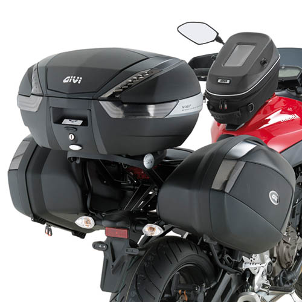
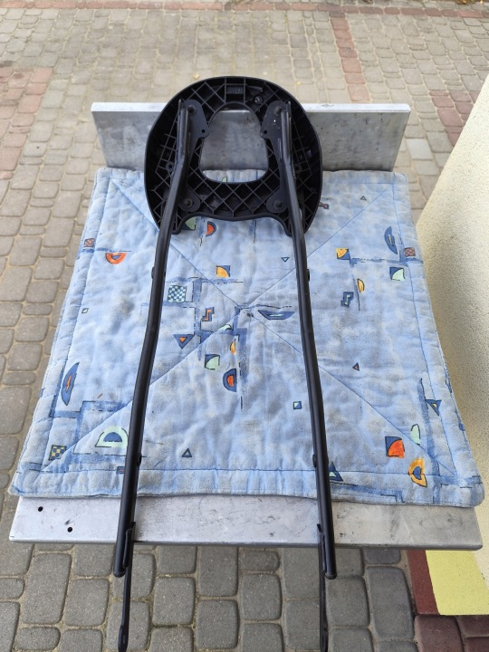
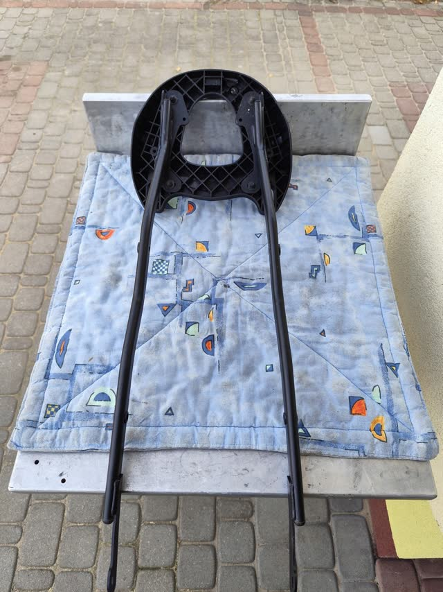
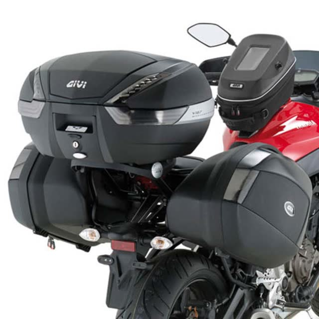
📊 Ranking — wszystko co realne (cena total do drzwi w SE)
| Zdjęcie | Produkt / oferta | Cena | Transport do SE | TOTAL | Stan / ryzyko |
|---|---|---|---|---|---|
| FB MP — fäste top box MT-07, Bromma | 499 kr (198 zł) | odbiór — 0 kr | 499 kr | ⚠️ 4,5 mies. na FB, sprzedawca 3,8★ | |
| Allegro — używany stelaż centralny + płyta Givi Monokey | 280 zł = 707 kr | +15 zł PL +120 zł forwarder ≈ 341 kr | ~1047 kr | ✅ wizja OK; ⚠️ brak 2 wsp. + 2 tulejek; +moms przy odprawie | |
| sulas.se — Givi 2118FZ nowy | 850 kr | +99 kr (SE) | 949 kr | ✅ 1 szt.; płyta osobno | |
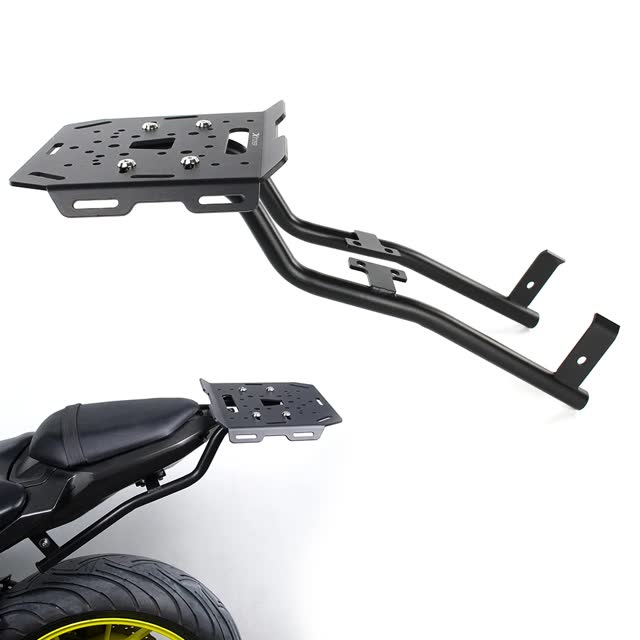 | AliExpress — dedykowany rack 2014-2017 (30 sold, 4,6★) | 1125 kr | free shipping (CN, 2-6 tyg.) | ~1125–1250 kr | ✅ recenzja MT-07 2017; ⚠️ brak płyty Monokey (płaska płyta) |
| OLX — Givi 2118FZ NOWY (FV, gwarancja 2 l.) | 360 zł = 908 kr | +30 zł +120 zł fwd ≈ 379 kr | ~1287 kr | ✅ sklep PL; płyta osobno | |
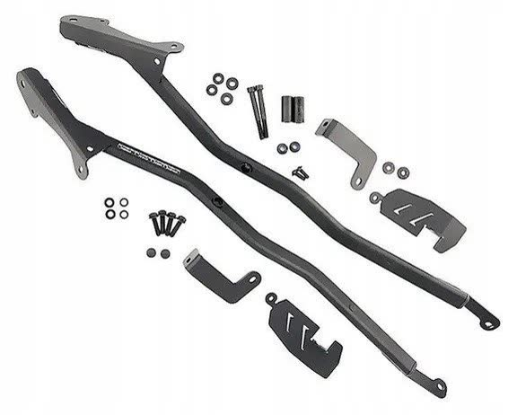 | Allegro — KAPPA KZ2118 nowy (odpowiednik 2118FZ) | 419,93 zł = 1060 kr | dostawa PL 0 + forwarder 303 kr | ~1363 kr | ✅ nowy, darmowa dostawa PL; płyta osobno |
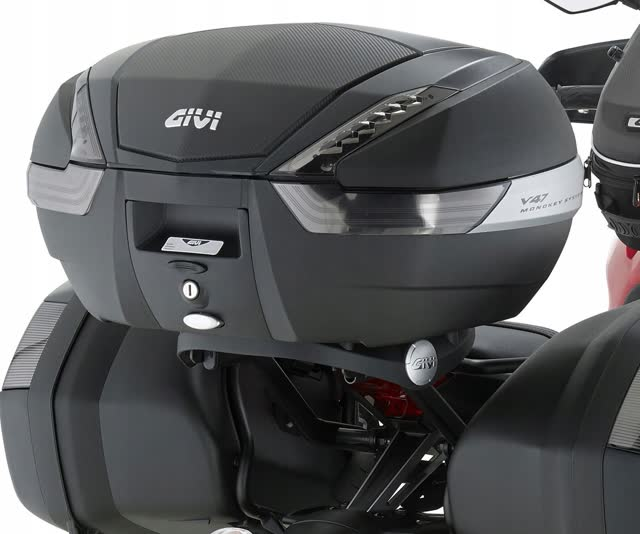 | Allegro — GIVI 2118FZ nowy | 432 zł = 1090 kr | +15 zł +303 kr | ~1408 kr | ✅ nowy; płyta osobno |
| acmotos.com (ES) — Givi 2118FZ nowy, UPS do SE | 111,93 € = 1248 kr | +15,90 € (177 kr), 3-5 dni, VAT incl | 1425 kr | ✅ formalnie i bez forwardera; płyta osobno | |
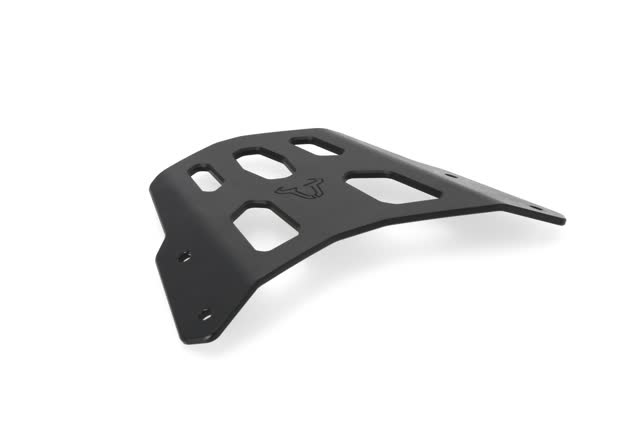 | Amazon.de — SW-MOTECH Street-Rack (5,0★) | 1925,50 kr | +120,66 kr — dostawa 30.11 | 2046 kr | ✅ najszybszy; adapter-plate do kufru osobno |
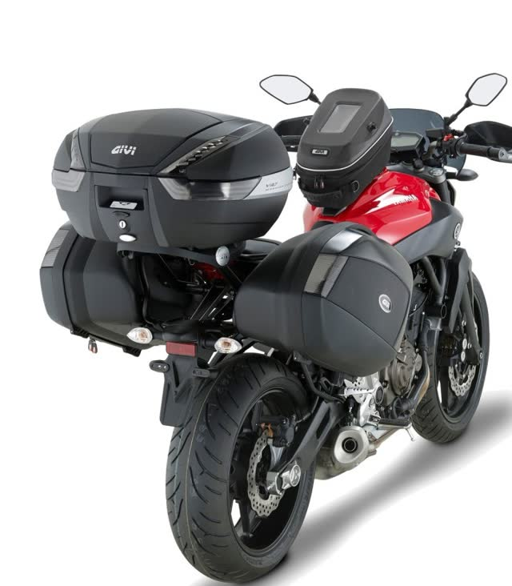 | tradeinn — SHAD Top Master Y0MT78ST (fit 14-23) | 132,99 $ = 1349 kr | koszyk (szac. 10-20 €) | ~1450-1570 kr | ✅; płytka z kufru Shad wg typu |
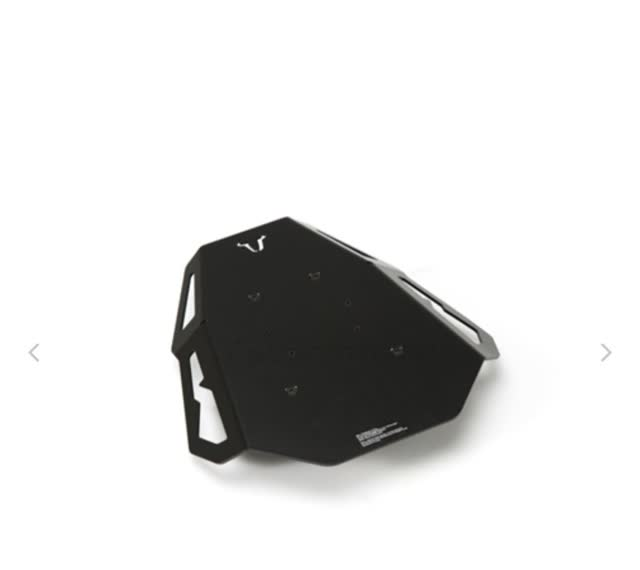 | OLX — SW-Motech Seat-Rack używany | 250 zł = 631 kr | +forwarder 303 kr | ~934 kr | ⚠️ montaż ZAMIAST siedzenia pasażera |
 | Hepco&Becker Sportrack (producent DE) | 185 € = 2062 kr | + wysyłka DE-SE | ~2200+ kr | ⚠️ zastępuje siedzenie pasażera |
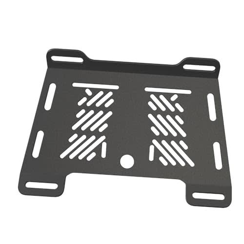 | Amazon.de — generyk CNC „fit MT07 2014-2020" | 714 kr | +30 kr, dostawa 15-22.12 | 745 kr | 🔴 0 recenzji, „uniwersalny" — loteria montażu |
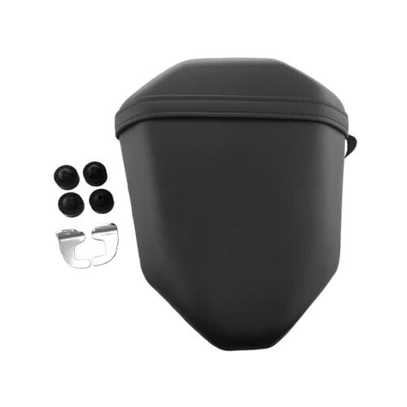 | Amazon.se — siedzisko pasażera z odpiętą półką (fit 14-17) | 1097 kr | free, 12-17.12 | 1097 kr | ⚠️ to półka z poduszką, NIE pod top case; 0 recenzji |
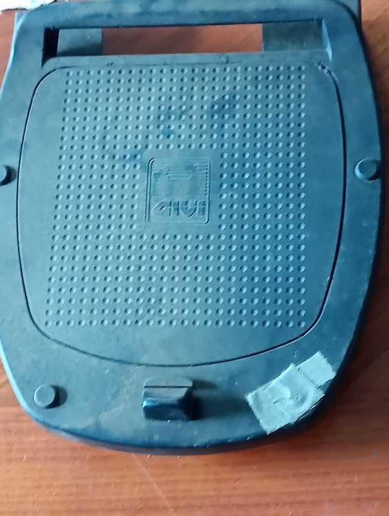 | Tradera — uniwersalny pakethållare (aukcja do 23.11) | od 590 kr | odbiór/wysyłka SE | 590+ kr | 🔴 sprzedawca nie zna modelu — przymiarka |
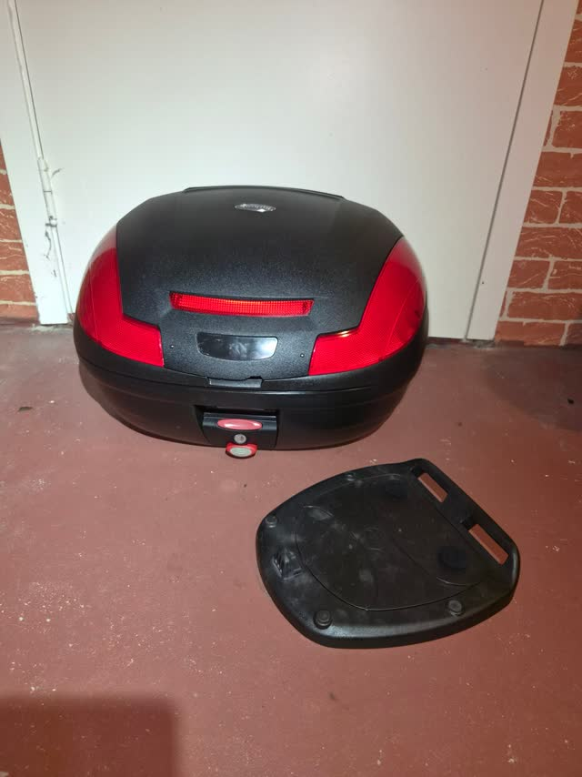 | Blocket — same kufer/topboxy (Givi 40L 300 kr Kumla · Givi 39L 400 kr Växjö · zestaw Wingrack+2×E36 1900 kr Dalby) | 200–1900 kr | odbiór SE | — | ℹ️ bez racka — pasują NA racki powyżej (Monokey) |
ℹ️ Do Givi 2118FZ / Kappa / Shad / SW-Motech kupujesz sam stelaż — kufer sadowi się na płycie (Monokey/Monolock — używane płyty OLX od 20 zł, 50–126 kr). Jeśli planujesz przewozić torbę/plecak, stelaż wystarczy sam.
🇸🇪 Szwecja — rynek używany (Blocket / Tradera / FB)

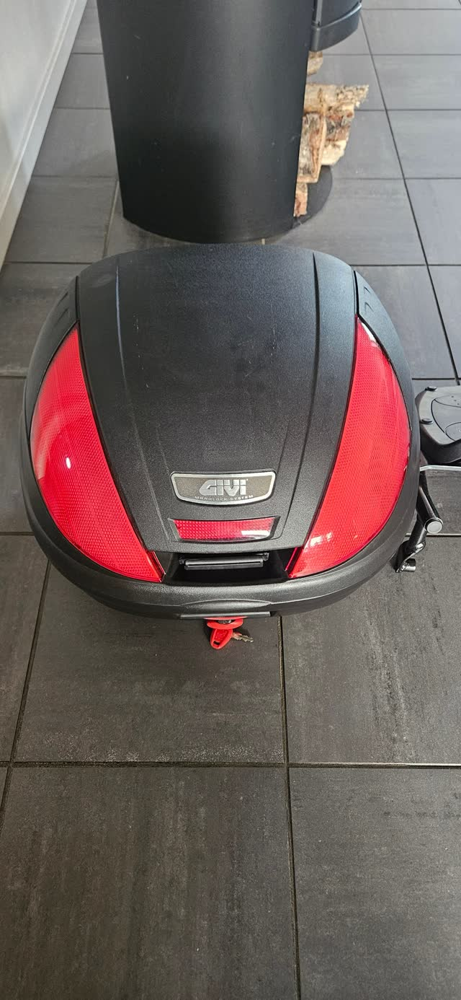
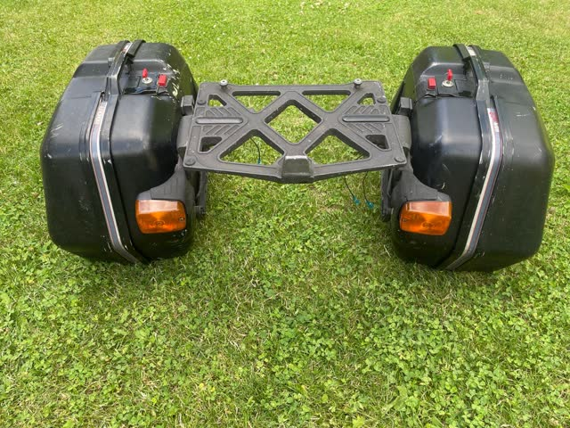
🇵🇱 Allegro / OLX — najlepsze ceny świata (wymagają transportu)
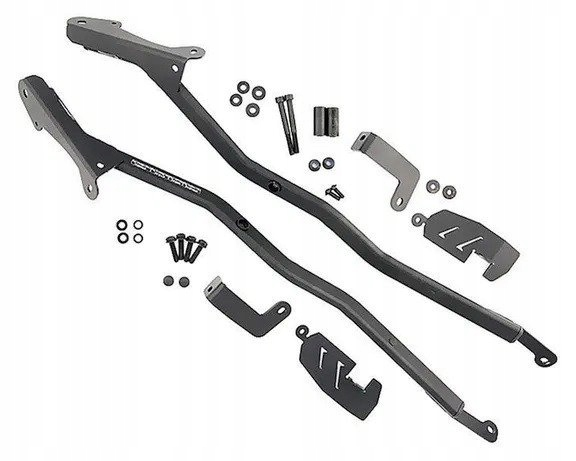
🇸🇪 Nowe w szwedzkich sklepach
| Sklep | Produkt | Cena | Uwagi |
|---|---|---|---|
| sulas.se ✅ 200 | Givi 2118FZ (stelaż centralny) | 850 kr +99 wys. = 949 kr | było 1600 kr; 1 szt.; płyta osobno — NAJTANIEJ w SE |
| sportisgood.se ✅ 200 | Givi 2118FZ | 1340 kr | pełna oferta Givi |
| gmoto.se ⚠️ | Givi 2118FZ „bez plåt" | 1406,07 kr | curl 403 (bot-wall) — w przeglądarce działa; cena z Lightpandy 20.11 |
| lugnetsmccenter.se | Givi Monorack arms MT 14-17 | 1650 kr | dostawa od 0 kr |
| hedsyamahashop.se | Yamaha OEM pakethållare + płyta | 3227 kr | ⚠️ sekcja MT-07 Tracer — potwierdź z dealerem fit do naked 2016 |
🇪🇺 Nowe w sklepach EU (wysyłka do SE)
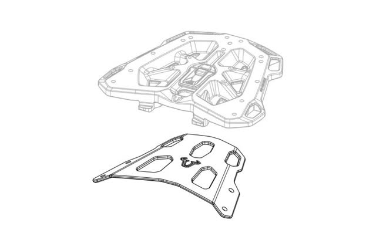
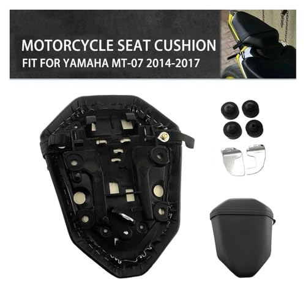
🛸 AliExpress — dedykowane gen-1 (2014-2017)

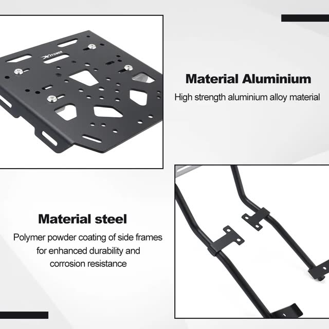

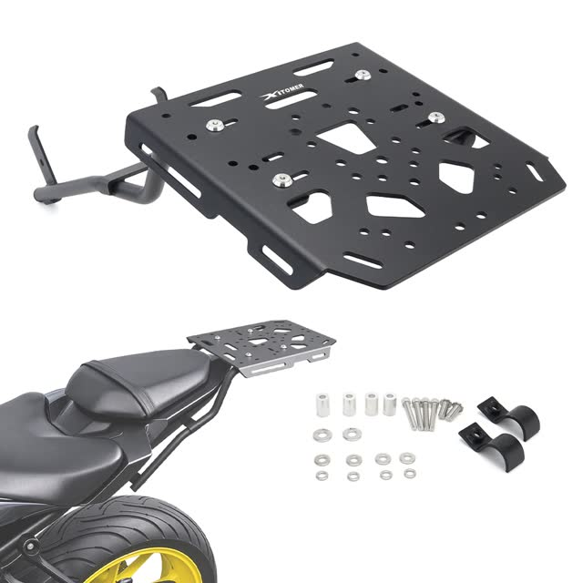
📦 Amazon se/de
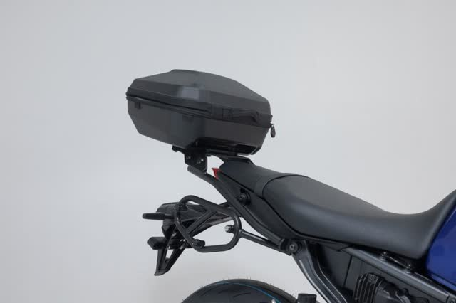
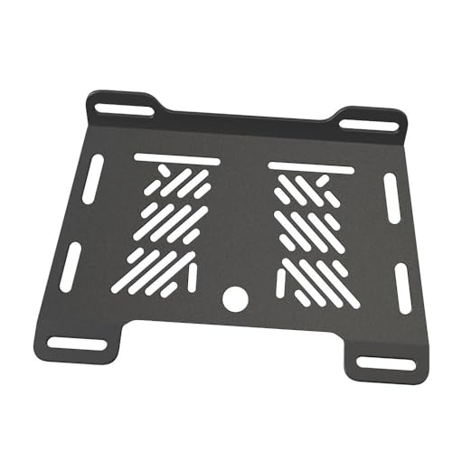
🔧 Kompatybilność — co NAPRAW DĘ pasuje do MT-07 2016 (gen 2014-2017)
| Part | Co to | Uwaga montażowa | Źródło |
|---|---|---|---|
| GIVI 2118FZ | stelaż centralny Monokey/Monolock | płyta osobno (M5/M7/M8/M9/M10 lub M5M/M6M); przy M8A/M8B/M9A/M9B brak stop-light/remote (przebicie obudowy) | givi.it fitment · instrukcja PDF ✅H |
| SHAD Y0MT78ST | Top Master fitting kit | fit 2014-2023 (jedyny numer na wszystkie geny); kufr z małą płytką → potrzebna średnia D1B40PAR | shad.es ✅H |
| SW-MOTECH Street-Rack GPT.06.506.16000(/B) EAN 4052572051160 | płaski rack alu | adapter-plate GPT.00.152.35000/B osobno (Givi/Shad/Krauser) | sw-motech.com ✅H |
| H&B Sportrack 6704537 / Smartrack 6804537 | sportrack / rack pod soft | Sportrack montowany zamiast siedzenia pasażera | hepco-becker.de ✅H |
⛔ NIEPASUJĄCE (mylące w ofertach!)
Givi 2140FZ = 18-20 · Givi SR2173 = 25-26 · Givi SR1142 = adapter do Hond CB, NIE MT-07 · SW-Motech 4052572212202 = 18-24 · 4052572283431 = 24- · wszystko „Tracer" (2130FZ, KZ2130, Y0MT76ST) · Ali: wszystko „2018-2024" / „2021-2026".
⛔ Czego NIE kupić (pułapki z tego researchu)
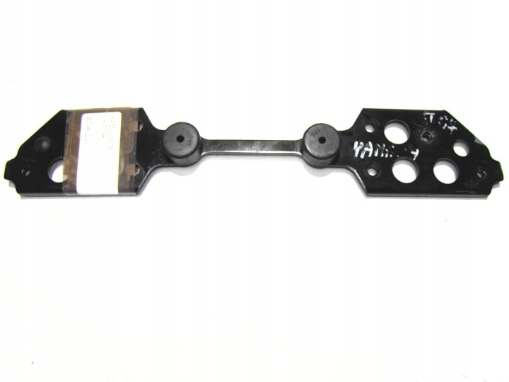
💰 Koszty ukryte — ściąga
| Pozycja | Koszt | Źródło |
|---|---|---|
| Forwarder PL→SE (5 kg, 50×30×15) | Paczka Szwecja/JDC 120 zł ≈ 303 kr (dostawa w SE w weekend) · epaka od 101,25 zł · Euroscandia 220 zł | paczkaszwecja.pl · epaka.pl |
| Moms przy prywatnym imporcie z PL | formalnie 25% od wartości może dojść przy odprawie (280 zł → ~+175 kr) | praktyka JDC/epaka |
| Płyta Monokey/Monolock (gdy kupujesz sam stelaż) | używana OLX 20-50 zł (50-126 kr) · nowa wg modelu płyty | OLX płyta 20 zł · OLX Z113 Monolock 50 zł |
| Czas dostawy | Amazon.de SW-Motech: 30.11 · acmotos UPS: 3-5 dni rob. · forwarder PL: ~tydzień · Ali: 2-6 tyg. | — |
📌 Rekomendacja końcowa (moja opinia)
Plan B (pewny stan + płyta w komplecie): Allegro 280 zł + Paczka Szwecja 120 zł ≈ 1047 kr do drzwi (dolicz ew. moms).
Plan C (nowe, bez kombinowania): sulas.se 2118FZ 949 kr z wysyłką + używana płyta z OLX — całość i tak ~1000-1100 kr, oryginalne Givi, zero importu.
Moja typowana kolejność: FB → sulas → Allegro 280 → acmotos. (Jeśli chcesz od razu pod kufer i nie chcesz szukać płyty: Ali 1125 kr ma płaską płytę w komplecie, ale bez systemu Monokey.)